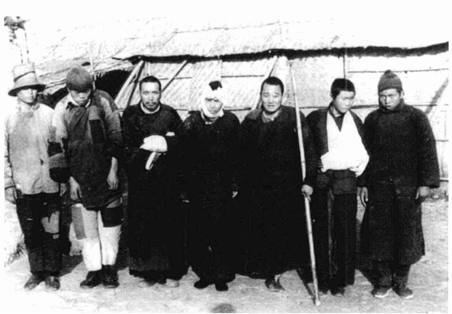
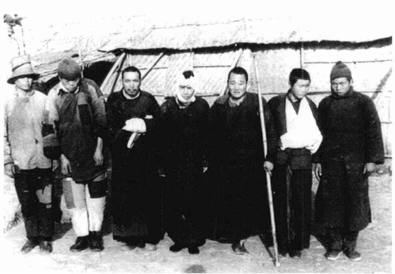

（一）辛德贝格生平介绍
伯恩哈尔·阿尔普·辛德贝格，丹麦人，1911年生，终身未婚。辛德贝格是侵华日军南京大屠杀的亲历者，也是当时在南京保护中国难民的国际友人之一。
1937年，辛德贝格代表丹麦到中国协助江南水泥厂进行护厂工作。在南京大屠杀期间，辛德贝格和德国的卡尔·京特博士在江南水泥厂设立了难民营，先后保护和救助了两万多名南京难民。1938年2月3日，辛德贝格向南京安全区递交了他所记录的日军在南京的屠杀等行为。辛德贝格还同国际红十字会南京委员会主席约翰·马吉牧师一起考察和拍摄江南水泥厂和栖霞寺一带日本军队的暴行。辛德贝格于1938年3月离开南京。返回欧洲后，他在日内瓦等地放映在中国拍的纪录片，把日本军队在南京的暴行公之于众。
辛德贝格在南京，首先接触到的是驻守江南水泥厂的中国人，接着收容周边的中国难民，接触到将中国人转变为中国难民的日本士兵以及保护中国难民的国外友人。在与不同人接触过程中，辛德贝格不仅展现了其英雄的一面，也呈现了其作为“有血有肉”的人的特征。
（二）作为"英雄"的辛德贝格
1、江南水泥厂

1937年12月5日，辛德贝格一行人受史密斯公司之托，抵达位于南京栖霞山东麓的江南水泥厂，肩负起保卫工厂与厂内机器的职责。彼时，侵华日军已陈兵南京外围，南京周边的村镇相继出现日军烧杀的身影，偌大的南京城已然笼罩在腥风血雨的阴霾之下。
在辛德贝格一行人到达江南水泥厂短短几天内，距离江南水泥厂不足10公里的孟塘、湖山等地便已爆发数场战役，日军16师团主力一步步向栖霞山逼近，在沿途农村展开屠杀。12月9日晚，栖霞山沦陷，面对无家可归、流离失所的难民们，自12.11日起，江南水泥厂开始收容难民们，渐渐形成江南水泥厂难民南区和北区。截止1938年2月中旬，工厂收容难民人数已达到一万名，其最多时庇护人数超过两万。
"由于你们的善意，我们一万条生命在你们的保护下得救"
通过幸存者们的口述历史可以得知：当时栖霞地区主要的两个难民收容所中，栖霞寺佛教难民收容开始曾"施粥"，而江南水泥厂难民区的难民则"自己管吃"，一般是晚上回村背点粮食来，发展到后来，甚至出现了做买卖的"集市"，有些人在厂里做点小生意，卖油条、元宵、豆渣，"没钱的难民甚至拿邮票出来换东西"。
江南水泥厂与栖霞寺难民收容人数变化对比(1937.12-1938.5)
从难民收容人数来看，两所难民收容所呈现此消彼长的态势——在别的难民营被迫逐解散的时候，江南水泥厂难民区的人数反而增加了。主要原因如下：
- 日方宣布将在2.4日强行解散所有难民收容所，后将日期推后至2月8日。
- 日军频频强入栖霞寺收容所骚扰、施暴，而江南水泥厂由于有外国人驻守，日军不敢随意进犯，比栖霞寺更加"保险"。
- 由于大量难民涌入，栖霞寺粮食入不敷出。
2、丹麦国旗
"在工厂之外，有三四千难民，他们在我们的国旗下得到庇护。"
刚一到厂，辛德贝格等人便立刻在厂的前后门高悬起德丹国旗，以保护厂内财物免遭战争破坏。而为了进一步避免日机轰炸的危险，辛德贝格还让人在厂房的屋顶上用油漆刷了一面约1350平方米大的巨型丹麦国旗,这样在空中就能清楚地看到。"我想这肯定是有史以来最大的一面丹麦国旗。"辛德贝格在1938年2月3日给奥斯胡朋友的一封信中写道。
而随着江南水泥厂难民收容所的建立，德丹两国的国旗也逐渐成为了保护难民免遭日军侵害的坚实盾牌，是难民们心目中象征着安全与庇护的保命符。在风雨飘摇的时代，江南厂的大门上飘扬着的丹、德两国的国旗，静静守卫着厂子周围搭建的一座座难民们居住的小棚子，彰显着人道主义的光辉。
- "他们还请附近一位姓王的裁缝连夜做德国万字旗、丹国十字旗。以防日军飞机轰炸；并在西沟渡、梅墓、御龙桥和栖霞火车站插上（工厂保护区）的配字，牌子上有交叉的德国旗和丹国旗。"
- "村上的小姑娘到江南厂外面的难民区，保险。丹国人蛮好的，挂旗子，竖大旗，日本人就不去。"
- "江南厂，......日本人来了，外国人讲讲话，日本人就走了。有日本人来糟蹋妇女，报告厂里外国人，丹国人就扛个旗子出来，说几句，日本人就走了。"
3、信件
1937年12月23日，辛德贝格开着"南京1085号"牌照的福特车，向拉贝递上了两份栖霞山难民致日本当局的请愿书。
1.7万名栖霞山"难民们在请愿书中请求得到怜悯及保护，免受日军士兵暴行的侵扰。"
拉贝随即以南京安全区国际委员会主席的身份，写信给日本大使馆一秘田中正一：
"请允许我向您递交两份从栖霞山转给我、并请我转交给您的请愿书，栖霞山目前也出现了和我们在南京一样的困难局面。希望您能够在这件事上有所作为。"
1938年1月25日，以"栖霞山寺庙"的名义，并由当地20位知名人士签名的、题为《以人类的名义致所有与此有关的人》的信，送到京特和辛德贝格的手中。春节过后，正月初四（1938年2月3日），辛德贝格将这封译成德文的栖霞寺难民信送到南京安全区国际委员会主席拉贝手中。难民们在信中说：
"值此,我们向您简要汇报该地的情况及本寺庙所遇到的骚扰。南京沦陷以来,每天都有数百人逃至我庙寻求保护,要求安置。我写此信的时候,寺庙里已经聚集了2.04万人，大部分为妇女和儿童，男人们几乎都被掳去为日本士兵当苦力。"
在列数了日军11天的暴行后，又说：
"我们请求你们，不管是谁，只要能帮助我们阻止重现这种惨无人道的残暴行径即可。安置在我们这儿的难民百分之八十已失去一切，他们的房屋被毁,牲口被杀,钱财被抢。"
1946年8月16日，马吉站在远东国际军事法庭审判厅的控方证人席上庄严作证说：
"（1938年）1月份或2月初的某一天，我去了栖霞山的一个小村庄，距离南京城15英里。这里有一个水泥厂，由一名德国人和丹麦人负责。水泥厂悬挂着德国旗，有大约1万名难民。当天晚上，我和周围许多村庄的老人们进行了交谈,他们来自当地至少10个村，大概有20位老人。所有地方都发生了和南京同样的事情，这些老人们告诉我，现在的问题是男人们不敢离开难民区，因为日本上兵总是来找女人，如果他们无法提供的话，就会被杀害......"
在"辛德贝格记录"、"辛德贝格案例"、"辛德贝格相册"之外，还有一封于1938年2月5日寄回丹麦的信件，这是辛德贝格寄给"奥胡斯朋友的一位朋友的信"，该信发表在1938年3月6日的《奥胡斯教区时报》上，有一个副标题是"饥馑威胁着数以百万计的中国人。"该信描述道：
"你难以想象,这里到处血流成河。8月份以来，我每天都无法避免地亲身经历着战争的恐怖。血，血，到处都是血。"
"一路上,到处看到的只是废墟。所有的村庄都被烧毁了,所有的牲口和家禽都被掳走了。举目四顾,看到的都是农民和中国士兵的尸体以及啃噬这些尸体的饿犬和野兽。"
"（江南水泥）厂里收容了6000名中国农民,包括妇女和儿童,他们失去了一切,几乎是一些赤贫的人。他们有的寄身于厂房的屋下,有的住在自己用稻草搭建的小窝棚里。我们的国旗保护着他们,但问题是没有足够的食品,只有上帝才知道这些可怜的人是如何苦熬度日的。"
4、医疗救助
 

1937年12月20日，辛德贝格从收音机里听说南京的局势已完全稳定了，便将几名受伤的中国人送到南京。这是他一直以来都尽力在做的：几个月前，在淞沪战场上采访时，他和史蒂芬斯"每次从前线返回的时候，都本着一项原则，就是尽可能多地带回受伤的士兵"。
然而，在送伤员前往城内的半路上遭遇了日本兵阻扰，辛德贝格无法，只得又让人把伤员重新运回栖霞山，自己则步行二十公里后搭上一辆日本卡车方才进城。之后不久，在1938年的1月14日，一个五六岁的小孩被送至江南水泥厂，据小孩父亲所说，是因为日本兵到他们村里抢劫粮食，由于抓不住鸡，便用手榴弹炸鸡，恰好一枚手榴弹在这个儿童附近爆炸，导致他全身严重炸伤，一只眼球因此被炸掉。由于伤势严重加之就职不及时，小孩的伤口感染恶化，辛德贝格当即决定用摩托车把他带到南京中山门，却再次被禁止进城，辛德贝格恳求卫兵替他把孩子送进医院，却仍遭拒绝。不得已，他只得带着孩子离开，但辛德贝格仍不死心，绕城行至太平门，快速行径岗哨，这次他们未受阻拦，终于来到美国大学医院，孩子最终得到了美籍医生罗伯特·威尔逊博士的治疗。
辛德贝格两次送伤员进城皆收到日本士兵阻拦，加之其不断施暴，致使中国无辜的民众伤亡数与日俱增，于是辛德贝格、京特博士、颜景和等人合计一番后，在江南水泥厂设立了江南水泥厂急诊医疗站所（小医院）。
小医院初建之时，无论医护人员还是药品皆极为短缺。辛德贝格特地前往南京，与鼓楼医院及红十字会接洽，最终促成两名护士来厂担任诊治，所需药品亦由红十字会提供支持。之后由于京特博士考虑到"农民可能更相信中医"，便又与三个老中医达成合作。小医院投入运作后，挽救了无数生命。许多原本伤势严重、濒临绝望的难民在这里得到了及时救治，重获新生。
5、披露日军暴行
彼时日军一直密切关注着西方国家对于南京真相的掌握情况，因此他们不希望有更多外国人进入南京，更不希望有与南京暴行相关的影像及文字流出。然而，这些手段终究无法封锁正义与人道主义的声音。
辛德贝格早在跟随史蒂芬斯在上海战场上采访的时候，就已逐步学会使用相机和文字记录历史。1937年12月初，辛德贝格来到南京后，特别是与南京安全区国际委员会和国际红十字会南京委员会的成员们接触以后，他保持了跟随史蒂芬斯时形成的用文字和相机记录情况的习惯。
在南京的日子里，辛德贝格冒着巨大风险拍摄日军犯下的累累罪证，最终留下了一部对于还原历史真相具有关键作用的"辛德贝格相册"。
根据学界研究，该相册主要可分为三部分：第一部分是记录1937年淞沪抗战的照片；第二部分则是马吉所拍摄电影的截图；第三部分是记录日军南京大屠杀期间江南水泥厂难民区及南京附近农村情况的一组照片。
第三部分中，一幅幅照片令人触目惊心：南京城外路边的池塘内，满是被日军处决的农民和解除武装的中国士兵的尸体；中国农民和士兵的手臂直到遇难后还被绑在背后；闭目张嘴的遇难者，似乎临死前曾大口喘息或叫喊过；脚上尚有布鞋，躯体已见肋骨，白骨森森，惨不忍睹；遇难者遗体横陈野外，野生动物或流浪狗正在啃噬......
这些照片印证了已有史料和难民口述，成为日军当时在南京犯下的滔天罪行的铁证。
辛德贝格也积极配合其他正义人士展开记录工作。1938年2月16日至17日，马吉前往栖霞山江南水泥厂,辛德贝格偕同马吉"驱车郊外",马吉拍摄了水泥厂急诊室、小医院、难民收容所及栖霞至南京沿途情况的15个电影镜头,并撰写了影片相关部分的解说词和《栖霞山之行报告》。
在辛德贝格离开南京后三天左右，日本军方和使馆就掌握了他的信息，包括他拍的一些照片的情报，以至于辛德贝格不得不离开中国。
"现在我得到关于我儿子突然离开东方的解释。日本人警告他，并要求他在几小时内离开香港。这发生在星期天，因此他无法去银行取钱。"
1938年4月25日，辛德贝格乘坐D'Artagnan船离沪，6月初，他与前来迎接自己的父亲在日内瓦会合。其时，那里正在召开第24届国际劳工大会。1938年6月2日，辛德贝格得到了来访问的中国代表团的邀请，中国官方代表希望辛德贝格在日内瓦停留3天，由他邀请国联成员观看自己带来的记录中日战争的一部影片。
1938年6月3日晚，应邀前来的国际联盟成员国代表、各国记者约100人聚集在中国国际图书馆，在影片播放前，辛德贝格应邀作了讲话，并"花了好几个小时来解释这部影片"。真相无疑是残酷的，在"影片播放期间，现场有许多人焦虑并哭泣。"
辛德贝格作为中立国公民和事件见证人的身份，在日内瓦用纪录影片向国际社会揭露了侵华日军南京大屠杀的暴行。这无疑是一重要的历史事件，它大大丰富了研究南京大屠杀的史料。史实说明："当时从未听说中国政府有关日军暴行的说法'是不对的'，南京大屠杀并不是'中国人编出来的谎言'。"
（三）作为"有血有肉的人"的辛德贝格
（对工作、友情、平时为人处世的态度：重视友情、幽默狡黠、性格冲动）
1、友情
1937年12月20日,辛德贝格因送伤员进城受到日本兵的阻拦而独自进城。这是辛德贝格于南京攻防战结束后,第一次进南京城,也是他应聘到栖霞山保护江南水泥厂厂产任务后第二次进南京城他来到位于南京宁海路的安全区国际委员会总部,认识了该委员会主席约翰·拉贝,认识了与拉贝同在一个办公室工作的该委员会秘书斯迈士,还认识了克勒格尔和拉贝的助手、安全区国际委员会粮食委员韩湘琳;很快,12月22日辛德贝格再次进南京城,这次他又认识马吉、威尔逊等-批留在南京、从事人道救助的中外人士。
这样,城外的栖霞山难民机构就与城内的难民机构建立起联系。日后的事实证明,这对双方,对栖霞山的难民机构,对外界了解栖霞地区的真相,特别是对保护栖霞山的难民都很重要。
（1）外国友人
"节前的准备、美好的期待和欢乐，而现在拥有的只是恐惧和悲哀，不知下一刻会发生什么事情。"
1937年12月25日，星期六，西方的圣诞节，天气晴好。
这对西方人而言是最为重要的节日，然而，彼时的南京仍沉浸在侵华日军南京大屠杀的腥风血雨之中，宛如人间炼狱一般。就在节前，日本士兵还忙着建立日本士兵妓院，通过难民登记和欺骗的手法，把一些无辜平民和不再携带武器的原是中国部队的士兵挑出来一批批残忍杀害。24日这天，日军又在劫掠店铺甚至美国使馆，之后便放火焚烧，"大火映照着城市南面与东面的天空。"
由于这场浩劫，南京的大部分商业活动都停止了。圣诞节前，保护南京难民的安全区国际委员会和国际红十字会南京委员会的成员们也感到"食品越来越少，我们已经好几天没有吃过肉了，现在街上根本买不到任何东西，就连鸡蛋和鸡也买不到。"
而深知城内困境的辛德贝格深深地记挂着城内友人们，在12月23日那天，他不仅带来了栖霞寺难民的两封请愿信，而且"带来了两头猪、三袋红薯"，这些食物无疑如雪中送炭一般，让留守城内的西方人们办起了一场"由丹麦人辛德贝格捐赠的圣诞晚宴"。
此后，辛德贝格又在进城时多次给城内友人们捎来鸡蛋、活鸭、小猪、蔬菜等，而"每一次他们都用欢呼声来迎接这些食品的到来。"
（2）史蒂芬斯
1937年9月中旬，彼时正在为中国军队服务，承担驾驶卡车往返在上海和南京之间的辛德贝格获得了一个新的工作机会——为外国战地记者史蒂芬斯担任司机。在成功受聘后，他们乘着一辆宽大的克莱斯勒敞篷车，车盖上被刻上了一面巨幅英国国旗，日夜兼程地开往前线，报道在各个前线发生的战事。这段经历让辛德贝格直面了战场的残酷与冰冷，也让他心中充满了对英勇无畏的中国士兵的敬佩之情：
"中国士兵是非常令人钦佩的,他们勇敢地奔赴前线时，唱着欢快的曲子，他们衣衫褴褛,用竹竿肩起负荷。增援部队沿路看到他们受伤的战友，不但没有被吓倒，这些让人同情的场面似乎更能激励他们继续前进。
很多个晚上，我们去战壕或者去敌后的农舍里去看望他们，会发现他们正在打麻将......"
辛德贝格与史蒂芬斯的相处是愉快的，后者视他为朋友，昵称他"辛德倍儿坏"(Sindbad)。如此称呼，似乎说他狡黠、鬼点子多。辛德贝格也正是在作为史蒂芬斯助手的这段时间学会了使用相机和文字记录历史。两人每天都要花大量的时间在战区采访，去前线看望那些战里的士兵，有时还把一些伤员送到上海的医院。辛德贝格在写给家人的信中说，那是一个危险的工作，但是我不愿意改换做其他事情。我们伴着飞机和炸弹爆炸的雷鸣声、枪弹的喧嚣声工作、吃饭和睡觉。
1937年11月11日，史蒂芬斯在中日双方交火中死于日军枪口，辛德贝格被从混凝土上反弹回来的几个子弹擦伤了腿，幸运地逃过一劫。1937年11月14日下午,辛德贝格和很多人一道,在上海参加了史蒂芬斯的葬礼,是众多献花者中的一员。
2、工作
驻厂留守，要与日本人周旋，要管理好难民事物，要提防已出现的土匪，加之供应短缺，与亲人天各一方，这样看来，其不可谓不是一个相当艰巨的任务。
栖霞山地区沦陷后，日军便不时来厂骚扰捣乱，一日或来数次，或数十次，令辛德贝格等人烦不胜烦；而在1938年的1月10日（腊月初九），江南水泥厂迎来了一群"不速之客"：日本军官护卫着东京商会副会长的秘书蛇头来厂"参观"，洁白的雪地上留下东洋人黑色的脚印。这不禁让辛德贝格萌生"狼来了"之感："日本人仔细地巡查了整个工厂，还拍了工厂好多照片。......他们相互之间诡秘地轻声交谈。"
毫无疑问，日本人此次"来访"，是想要霸占这座价值800万丹麦克朗，亚洲第一、全世界第二大的水泥厂。在蛇头造访的第二天，辛德贝格当即在给詹生的信中请示："我该怎么继续？我等待您的回函。"而之后，辛德贝格也根据上级给出的三条要求，即"公司不能允许使用设备"、"自己不是工程师，对设备不了解"、"对日军保持礼貌"，成功与日军周旋拖延数日。而三并洋行在派员到厂探营5天后，便电"请"江南水泥厂在沪经理,向该厂提出"优先合作产销等事"。2月下旬，日方代表数次来中，中资水泥企业同样持敷衍回避态度，无法"磋商"即无甚结果,便怏怏回国。
尽管经历了南京攻防战和日军大屠杀，但直到日军1944年强行拆除设备前，江南水泥厂的设备基本完好，可以说多亏于护厂人士和各方努力的功劳。
3、对日军——机灵狡黠、不走寻常路
对于日军，辛德贝格自有一套灵活应变的技巧。彼时日军对南京城严加封锁，而辛德贝格去却能在这样的高压环境下多次出入南京城，原因便是他总结出"只要带着日本兵，就能进入南京城内的规律"。
一次，附近寺庙的两个僧人前来拜托辛德贝格开车带他们进城，辛德贝格灵机一动，开车先到附近的火车站，在那里他捎带了一名日本士兵，四人果然顺利地进了城。
而在辛德贝格给城里外侨送食品的过程中同样受到了哨兵的阻拦，但辛德贝格机智果断地向哨兵送了一箱鸡蛋，最后，一名军官和三名士兵掩护他通过了岗哨。
辛德贝格在面对日军的严密封锁时，展现了其出色的应变能力和灵活的策略。他凭借独特的判断力和机智，在高压环境下多次顺利进出南京城，展现了他在困境中超凡的智慧和冷静的处事方式。